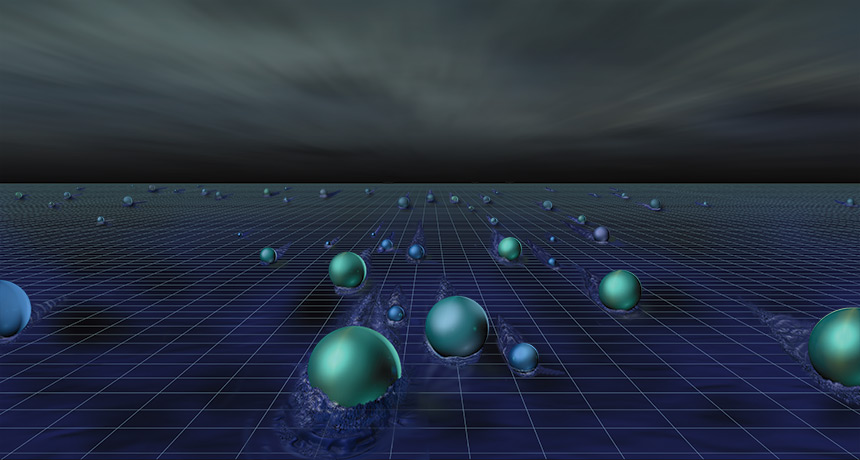
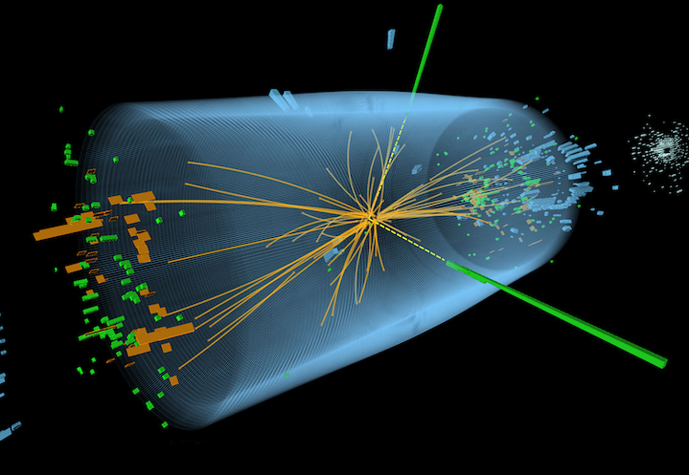
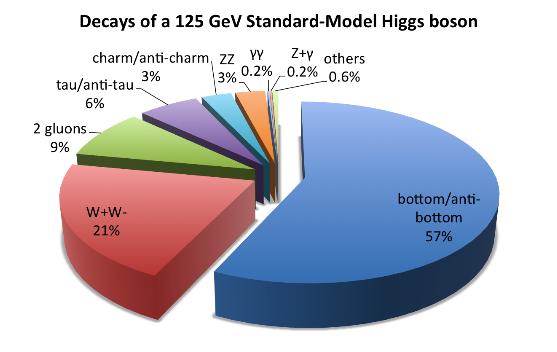

How do we get our mass
The Higgs Field isn’t some field where you go crops, and neither is it something like a football field. This field is something you are constantly interacting with, something that is spread across the universe, and something that is invisible. This is the field that gives all elementary particles their masses. The amount these particles interact with this field gives the particles their mass. The best analogy for this, given by ___, is to imagine a bunch of scientists at a cocktail party. When a tax collector walks in, not many people will want to talk to him, so they will ignore him. Therefore, he will be able to walk across the room extremely quickly, to the bar. On the other hand, if someone extremely famous, like Peter Higgs walks in, everyone would want to talk to him. This would lead him to walk slowly through the crowd, as every group of people would come and chat with him. This will slow his progression towards the bar. In this scenario, the group of scientists is the Higgs field, and the tax collector and Peter Higgs are particles moving across the field. This is why some objects are considered to be massless (like a photon- or a tax collector), and some are considered to have a lot of mass (like the Earth - or Peter Higgs). The massless particles can travel extremely quickly, while the particles with a lot of mass are slowed down. Now, this raises the question, how did we detect an invisible and seemingly undetectable field? I will answer this in this article, but before that, let’s understand what elementary particles are.
The elementary particles
The elementary particles are particles that can’t be divided anymore, or broken into even smaller particles anymore. They are separated into two categories, listed in the Standard Model, as fermions and bosons. The fermions are the ones that have the mass of an object, while the bosons are the ones that carry a force, or mediate an interaction. The Standard Model is classified as the following:
The fermions come in two categories: Quarks and Leptons.
The fermions cannot exist at the same place at the same time (for example, we can’t walk through walls, at least not in the current world). In other words, two fermions can’t be “described by the same quantum numbers.” The bosons, on the other hand, can exist at the same place at the same time (for example, we interact with billions of photons every day, but do they ever seem to bump into each other?). In other words, “two or more bosons may be described by the same quantum numbers.”
This is where the Higgs boson comes into play. The Higgs boson is created when there is an excitation in the Higgs field. Think of it as an filled-to-the-brim aquarium. The fish in the aquarium is a particle moving through the Higgs field. The Higgs field is the water in the aquarium itself. And when you add energy to this field, say, by moving the fish in it, it creates a splash of water on the table. This splash is the Higgs boson. Therefore, the Higgs boson is just an excitation of the Higgs field, like all other particles in every other field (for example, ). When we detected the Higgs boson in 2012, it proved the existence of the Higgs field to us.
How was the Higgs Field detected
When two beams of protons collide at extremely high speeds in enormous particle colliders like the Large Hadron Collider (LHC), it created extremely high energy particles.
When the kinetic energy (the energy in moving objects) of the high-moving particles collide, it converts most of this energy into mass and many different, smaller particles. Think of it as two soaked sponges smashing together, and the water that is released is the smaller particles, while the sponges are the proton beams. One of the particles created is the Higgs boson. This boson has a lifetime of about 10-22 secs, and due to that, we can’t measure any of its properties to confirm if it’s the Higgs boson or not. Therefore, we measure the properties of the daughter particles created when this boson decays. Although a Higgs boson rarely decays into two photons, it is the simplest to understand, so we will take this decay process as an example. You can see the probability of the Higgs boson decaying into other particles in the pie chart below:

Let’s consider a stationary boson. When the stationary boson decays into two photons, the total mass and energy of the boson must equal the mass and energy of the photons (due to the equation e = mc2). Since photons are massless and the energy of the boson is zero (it’s stationary), the energy of the two photons combined is equal to the mass of the boson. The problem that arises is that the boson has a certain, unknown, momentum to itself.
Do the interactions with the Higgs Field sum up to all the mass there is?
The interactions with the Higgs Field are only a fraction of all the mass; a significant portion of an objects mass comes from its energy. For example, a proton. Where do you think the mass of a proton comes from? Surely, if you add up the masses of the 3 quarks inside a proton, it should add up to the mass of the proton. Well, this is what I thought as well, but it turns out that the quarks add up to only 0.02% of the mass of the proton. The rest of the mass comes from the energy in the quarks; since the quarks are moving at extremely high speeds (close to light speed), they have a lot of kinetic energy. All this energy leads to the mass of the proton, along with the 0.02% mass the quarks get from interacting with the Higgs Field. Still, if the Higgs Field wasn’t there, it would mean that everything there is is just energy, no matter, no planets, no humans, no chocolate pudding, nothing.